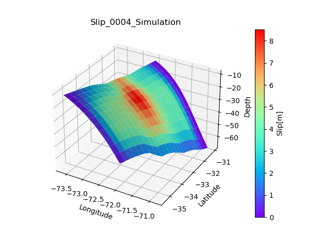

Note
Go to the end to download the full example code
3D Slip Figure
This example makes an 3d plot of Slip distribution :param X_array: Longitude grid :param Y_array: Latitude grid :param depth: Depth grid :param Slip: Slip grid :param filename: Optional, filename if you wanna save fig :return: 3D Figure of Slip distribution

import numpy as np
import matplotlib.pyplot as plt
import scipy.io
from matplotlib import cm
from matplotlib.ticker import LinearLocator
from matplotlib.colors import ListedColormap, Normalize
def plot_3d(X_array,Y_array,depth,Slip,filename=None):
fig = plt.figure()
ax = fig.add_subplot(111, projection='3d')
# Plot the surface with face colors taken from the array we made.
surf = ax.plot_surface(X_array,Y_array, depth, facecolors=cm.rainbow(Slip/np.max(Slip.flatten())), linewidth=0)
# Customize the z axis.
# Agregar barra de colores con el rango correcto
norm = plt.Normalize(np.min(Slip.flat), np.max(Slip.flat))
sm = plt.cm.ScalarMappable(cmap=plt.cm.rainbow, norm=norm)
sm.set_array([]) # este paso es necesario para que la barra de colores refleje correctamente los valores
plt.title('Slip_0004_Simulation')
# Configurar etiquetas
ax.set_xlabel('Longitude')
ax.set_ylabel('Latitude')
ax.set_zlabel('Depth')
cbar = fig.colorbar(sm, ax=ax, pad=0.1)
cbar.set_label('Slip[m]')
# Configurar posición de la barra de colores
cbar.ax.yaxis.set_label_position('right') # Puedes ajustar la posición según tus necesidades
if filename!=None:
fig.savefig(filename)
return plt.show()
# In[ ]:
file='../Output_data/Simulation_9.0/sim_0004.mat'
filemat=scipy.io.loadmat(file)
Slip=filemat['slip']
X_array=filemat['lon']
Y_array=filemat['lat']
depth=filemat['depth']/-1000
region=[-76,-70,-36,-28]
plot_3d(X_array,Y_array,depth,Slip)
Total running time of the script: (0 minutes 0.170 seconds)